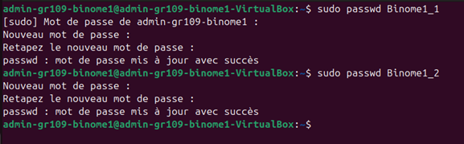
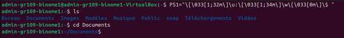

Personnalisation de votre Machine Virtuelle
Optimisez votre machine virtuelle selon vos besoins spécifiques
Après la connexion au système Linux, la première étape consiste à créer les comptes utilisateurs nécessaires. Pour cela, nous utilisons la commande useradd, qui est l'outil standard de création de comptes utilisateurs sous Linux.
- Création d'un compte utilisateur
- Création du répertoire personnel (/home/nom_utilisateur)
- Attribution des permissions de base
Dans un système Linux, après avoir créé les utilisateurs, il est essentiel de leur attribuer des mots de passe sécurisés. La commande passwd est l'outil dédié à cette tâche.
- Création du groupe Utilisation de groupadd pour créer le groupe Binome_1.
- Ajout des membres Ajout de Binome1_1 et Binome1_2 au groupe avec usermod -aG.
- Vérification des groupes Confirmation de l'appartenance aux groupes avec la commande groups.
On crée un groupe Binome_1 avec la commande groupadd, puis on ajoute Binome1_1 et Binome1_2 via la commande usermod –aG, usermod permet de modifier un compte utilisateur, -aG signifie qu’on va ajouter cet utilisateur à un ou plusieurs groupes.
On peut vérifier que les deux utilisateurs sont bien membres de Binome1 avec la commande groups. On voit ici que chacun d’entre eux est membre de son propre groupe et de Binome1.
Pour personnaliser l’invite de commande, il faut toucher à la variable PS1, qui correspond au prompt d’affichage par défaut dans le terminal. On pourrait simplement la redéfinir directement dans le terminal, mais ce changement ne marcherait que tant que ce dernier est ouvert, et disparaitrait lors de la fermeture de celui-ci.
C’est pour celà, qu'ici nous allons aller directement changer la variable à sa location. La variable PS1 se situe dans le fichier .bashrc qui se trouve dans le répertoire courant de l’utilisateur. Nous allons donc l’ouvrir avec l’éditeur de texte nano, puis chercher la localisation de la variable et la changer.
Ici nous avons simplement enlevé tout à part l’affichage du nom de l’utilisateur(\u) et de la localisation actuelle de l’utilisateur (\w), on aurait tout aussi pu mettre un texte personnalisé comme “Votre commande : ” par exemple. Nous changerons les deux définitions de variable, en couleur ou non. Après avoir sauvegardé et refermé le fichier, le prompt est maintenant différent, et il le restera même en cas de redémarrage de la machine.